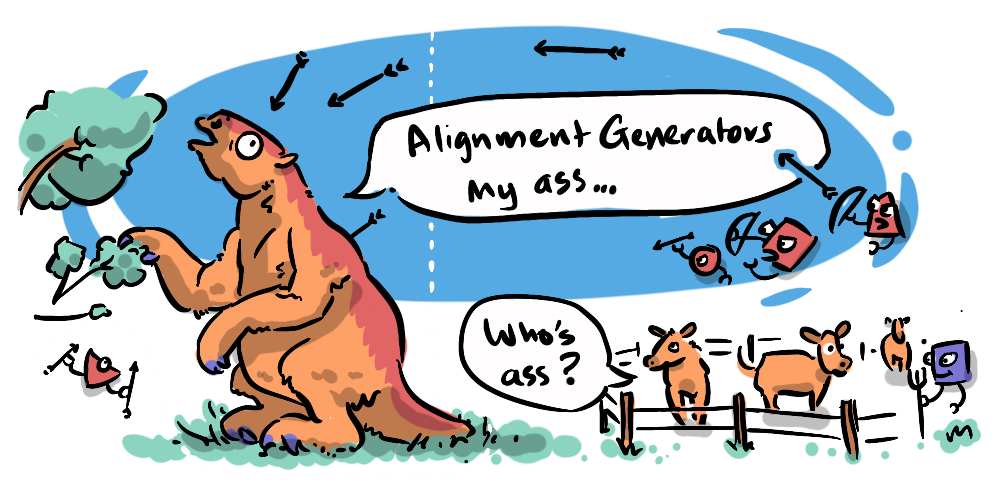
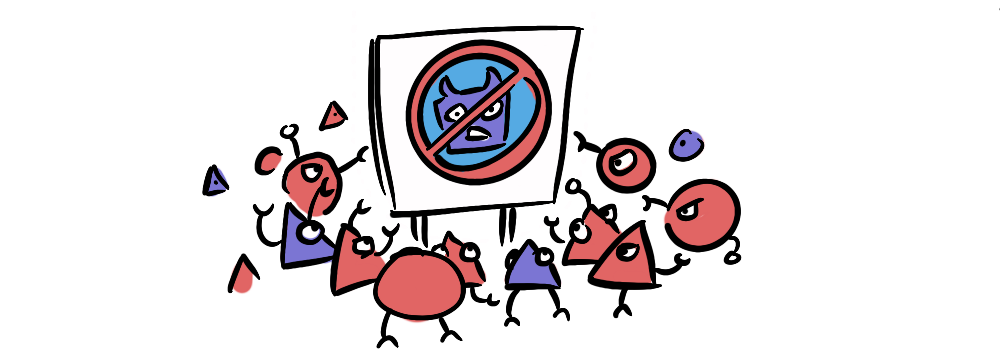
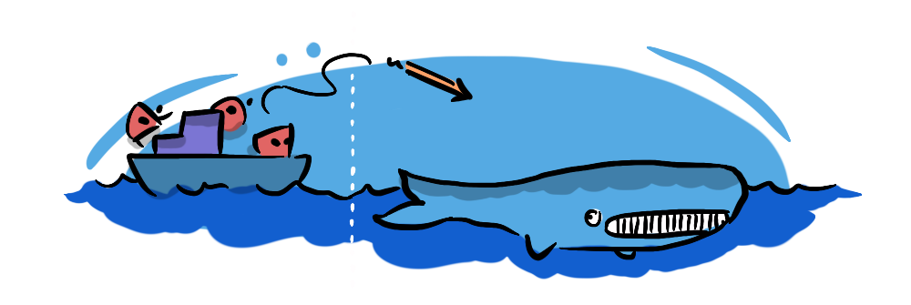
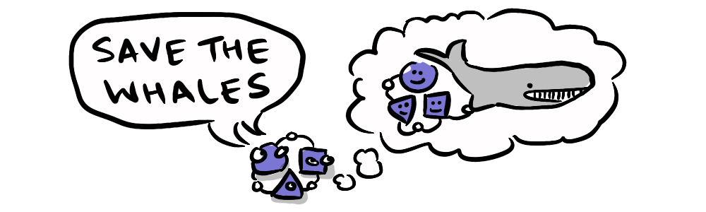
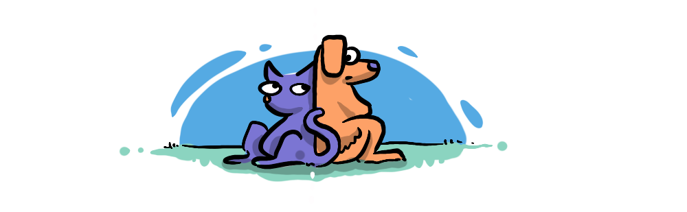
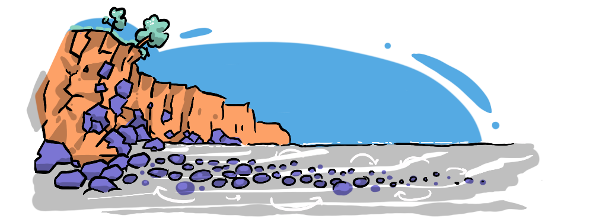
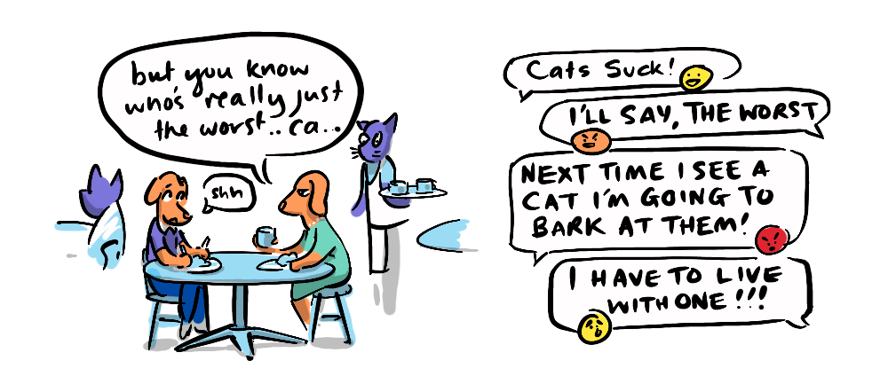

We've established that aligning interests through Theory of Mind is humanity's superpower. Understanding this concept on the level of different groups through Emmett Shear's "Theory of Groups of Other Minds" can help us achieve even greater alignment, if and only if we invite one another into our group.
But who qualifies as our group and who doesn't?
Social animals generally have instincts that allow them to naturally align with kin—conjuring a picture of the protective wild beastie mother kicking and charging at an encroaching croc. This instinct forms a natural sphere of concern for each other's well-being. Humans share this capacity, but our ability to reason, communicate and plan, allows us to include others outside of kin—friends, colleagues, crew or class mates, church groups, fellow citizens, the global community—in a widening sphere of moral concern ("moral" acknowledging our own capacity to affect the well-being of others). This makes us stronger together. But what happens when, for one reason or another, someone falls outside of that sphere, and the strength of an aligned system is siloed off from the "other"?
As mentioned in the first post, the fruits of human alignment have not always been beneficial for everyone concerned. Pioneering groups of humans that came into contact with megafauna (other big animals) led to mass extinction events across the world—due in large part to our ability to cooperate.

We all recognise that a madman is less dangerous than a mob—a group of humans with a shared goal is a powerful thing. To any other individual or group that stands in the way of that goal, the aligned group becomes a terrifying prospect.
Now, if alignment was a trend that simply spread uniformly, there would be no issue—cooperation would lead to greater and greater prosperity for all. But unfortunately, that's not how the world works. There are zero-sum situations in life, real and imagined, that lead to a line being drawn between in-groups and out-groups, your loyal compatriots and "The Other".

In fact, the idea of a common enemy has often been used to catalyse a unified movement—alignment through opposition. We see this in anti-intellectual movements, anti-globalist movements, anti-vax, anti-woke, anti-religious, even anti-fascist movements. We see this most dangerously in our political polarisation, where sides become powerfully aligned against each other, dividing the world in two, and threatening to upend civilisation itself.
Yet, these are not solely political conflicts, sometimes they're just down to a competition for finite resources, for food—sometimes it's even a conflict... with food.

Emmett Shear uses whales as an example. Our alignment made us capable of successfully hunting a giant, intelligent species in a foreign environment to the brink (and sometimes over the brink) of extinction, because we had a shared goal of acquiring food and we distinguished our interests from those of the whales'. The whale was, for a long time, an "other"—outside humanity's sphere of moral concern.
But, eventually our widening scope of "Theory of Other Groups of Minds" has brought whales inside the sphere of moral concern for many animal rights activists, leading them to appeal to our greater sense of alignment to...

Wolves are another example of siloed alignment, a lone wolf can be avoided or even frightened off by a loud noise, but a pack is much more dangerous—able to surround, harry or exhaust prey as large as a Moose or Bison (or human).
And wolves give a clue to a potential solution to the problem of siloed alignment. Alongside humans (the alignment generators) wolves have had their capacity for alignment expanded to include humans, through repeated contact and breeding (into dogs). We have even helped align domestic animals with each other!

Further to breeding, a key to this alignment is consistent contact and socialisation. Every good dog owner understands the importance of socialisation for a well-adjusted pet.
We see the same in the case of human in-groups and out-groups. In "Humankind" Rutger Bregman highlights Ira N. Brophy's work which, in the wake of WWII, demonstrated that racist prejudice among white sailors reduced consistently on mixed crews in the U.S. Merchant Marine. Consistent exposure to an out-group and working together on a common goal brought "The Other" into the fold. After just two interracial voyages, the proportion displaying strong prejudice had fallen by nearly half, and continued to do so*. The racism was being socialised out of the population.
Emmett Shear's perspective is that we need to socialise AI.
At present LLMs go through a process of training, where their behaviours are honed—this is much like parenting, or dog training, it's very important, vital in fact, but not sufficient for life in the real world. In Arthur Herman's "The Scottish Enlightenment" he describes how the interaction of people and ideas with other people and ideas "polishes" them, wearing off the sharp edges and snags that make them conflict—it is related to the word "polite". Polite society is one where we take into account the concerns of others, creating a society with a high level of 'Theory of Mind' or emotional intelligence.

It might seem premature to assign the moniker of "polite society" to our civilisation—in the current climate where considering the feelings of others is often written off as "political correctness". But we do see the difference between people's behaviour face-to-face, contrasted against the anonymised online social environment—and that reveals that even for the most anti-woke among us, a level of polish exists IRL.
We have peered into the shadows of cooperation and seen that humanity's super-power can come at a significant cost to "The Other". But I hold out some hope that Emmett is correct in his assessment that AI can benefit from socialising—polishing behaviour through interaction and interdependence with others—bringing AI agents and humans into each other's sphere of moral concern. I think this is going to be necessary for humanity to survive and thrive in an age of AI.
Unfortunately, as mentioned, greater politeness does not seem to be on trend, due in large part to our fractured online presence, where our unvarnished and often ill-considered reactions hold sway, driving engagement, and polarising humanity itself.

Next I would like to return to an idea that gets at the problem head on... or head off, as the case may be in The Dividual Strikes Back.